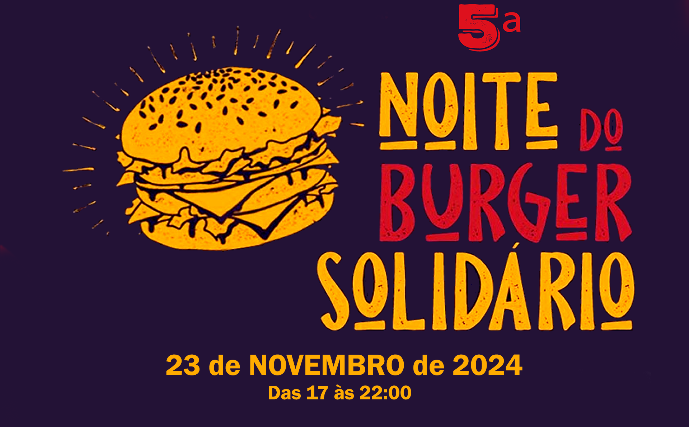
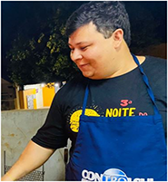

🍔5º Burger Solidário - 2024🍔


Hoje, 27 de dezembro de 2024, entregamos o cheque de R$35.760,21 ao SOS - Serviços de Obras Sociais de Londrina, representado pela presidente Dona Ilda, de 93 anos, em reconhecimento ao seu trabalho dedicado desde 1969.
Este valor, arrecadado na 🍔5ª Noite do Burger Solidário🍔, é resultado da colaboração dos patrocinadores e voluntários. Agradecemos profundamente a todos que contribuíram para o sucesso deste evento.
Esperamos todos novamente em 2025 para a 🍔6ª Noite do Burger Solidário🍔! Vamos continuar essa corrente do bem e transformar ainda mais vidas.
Este valor, arrecadado na 🍔5ª Noite do Burger Solidário🍔, é resultado da colaboração dos patrocinadores e voluntários. Agradecemos profundamente a todos que contribuíram para o sucesso deste evento.
Esperamos todos novamente em 2025 para a 🍔6ª Noite do Burger Solidário🍔! Vamos continuar essa corrente do bem e transformar ainda mais vidas.
🍔5º Burger Solidário - 2024🍔

Graças à generosidade e ao trabalho árduo de todos, o 5º Burger Solidário foi um sucesso incrível, destinando a doação de R$ 35.760,21,
superando o evento anterior em aproximadamente 34,71%!
Evento em prol das instituições


Assista este vídeo e saiba mais sobre a instituição beneficiada pelo nosso evento neste ano.
Mais informações sobre o evento


Seja um patrocinador, contribua também com esta corrente do bem. 🍔❤️
Agradecimento aos nossos Patrocinadores de 2024


Junte-se ao 5º Burger Solidário! Seja um patrocinador, apoie uma causa importante e veja sua marca em evidência nas redes sociais e no evento!
História do Burger Solidário
🍔 1º, 2º e 3º Burgers Solidários - 2019-2021 🍔
A "Noite do Burger Solidário" nasceu do desejo de ajudar nosso querido irmão Giuseppe Prato, que precisava de uma cirurgia na coluna e havia sido diagnosticado com câncer. Em um espírito de fraternidade, todos os irmãos se uniram, e assim foi criado o "Primeiro Burger Solidário."
No ano seguinte, quando Giuseppe enfrentou um novo câncer, o evento foi novamente dedicado a ele. Com o apoio da Loja Prosperidade, realizamos o "Segundo Burger Solidário," agora com maior organização e planejamento.
No terceiro ano, enquanto Giuseppe continuava sua batalha contra a doença, organizamos o "Terceiro Burger Solidário." Infelizmente, Giuseppe nos deixou um dia após o evento, e nossa perda foi ainda maior com o falecimento de nosso irmão Edno Gentilho Junior, que tanto contribuiu para os eventos anteriores.
Diante desses acontecimentos, decidimos transformar a "Noite do Burger Solidário" em um evento anual da Loja Maçônica Arte & Ciência, mantendo vivo o legado de solidariedade e honra à memória dos nossos queridos irmãos, levando adiante o espírito de união e apoio que sempre marcou essa jornada.
No ano seguinte, quando Giuseppe enfrentou um novo câncer, o evento foi novamente dedicado a ele. Com o apoio da Loja Prosperidade, realizamos o "Segundo Burger Solidário," agora com maior organização e planejamento.
No terceiro ano, enquanto Giuseppe continuava sua batalha contra a doença, organizamos o "Terceiro Burger Solidário." Infelizmente, Giuseppe nos deixou um dia após o evento, e nossa perda foi ainda maior com o falecimento de nosso irmão Edno Gentilho Junior, que tanto contribuiu para os eventos anteriores.
Diante desses acontecimentos, decidimos transformar a "Noite do Burger Solidário" em um evento anual da Loja Maçônica Arte & Ciência, mantendo vivo o legado de solidariedade e honra à memória dos nossos queridos irmãos, levando adiante o espírito de união e apoio que sempre marcou essa jornada.

Giuseppe Prato

Edno Gentilho Junior
🍔4º Burger Solidário - 2023🍔

A quarta edição realizada no ano de 2023 foi revertida para a Sra. Adriana Miranda que possuía uma grave deficiência em seus olhos, grau severo de miopia.
O Evento foi de grande sucesso, além de contribuir para uma melhor qualidade de vida da Sra. Adriana Miranda com o valor arrecadado conseguimos contribuir com pessoas e instituições necessitadas como:
O Evento foi de grande sucesso, além de contribuir para uma melhor qualidade de vida da Sra. Adriana Miranda com o valor arrecadado conseguimos contribuir com pessoas e instituições necessitadas como:
- Ajuda ao Cauê e Ana Beatriz de 11 anos, ambos em tratamento contra o câncer, que precisavam ir para Curitiba para efetuar transplante de medula para finalizar o tratamento, procedimento que não é realizado em crianças aqui em Londrina.
- Insumos para a Instituição Nuselon
- Insumos para Lar Maria Tereza Vieira
- Insumos para Asilo São Vicente de Paulo
- Insumos para Lar das Vovozinhas
- Insumos para a Família do Rio Grande do Sul afetada pelas fortes chuvas
- Viagem do Menino Lorenzo para as Olimpíadas de Matemática em Nova York